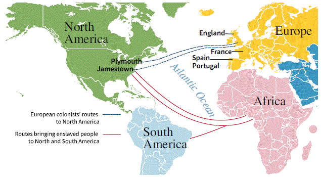
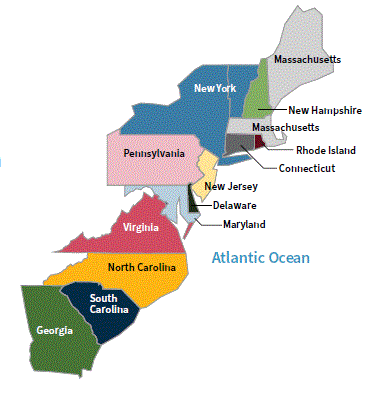

[p43]
In this chapter, you will learn about:
[p43]
En este capítulo, aprenderá sobre:
In the 1400s, some European countries developed ships that could sail across the ocean. Spain was the first country to send ships across the Atlantic Ocean.
They did not know that the continents of North America and South America were between Europe and Asia. North and South America are sometimes called the Americas.
The Europeans also did not know that there were millions of people living in North and South America. The people living in the Americas before the Europeans arrived are called Native Americans.
By the 1500s, Spain had created colonies across North America and South America. Soon, other European countries like France, Portugal, and England started creating their own colonies in the Americas.
En los años 1400, algunos países europeos desarrollaron barcos que podían navegar a través del océano. España fue el primer país en enviar barcos a través del Océano Atlántico.
No sabían que los continentes de América del Norte y América del Sur estaban entre Europa y Asia. América del Norte y América del Sur a veces se llaman las Américas.
Los europeos tampoco sabían que había millones de personas viviendo en América del Norte y América del Sur. Las personas que vivían en las Américas antes de que llegaran los europeos se llaman Nativos Americanos.
Para los años 1500, España había creado colonias en América del Norte y América del Sur. Pronto, otros países europeos como Francia, Portugal e Inglaterra comenzaron a crear sus propias colonias en las Américas.
Native Americans lived in North and South America for around 20,000 years before the Europeans arrived.
There were many different tribes of Native American people living in the Americas. Each Native American tribe had their own culture, religion, traditions, language, and form of government. Many tribes moved around and relied on hunting and gathering for food. There were also tribes that stayed in one place and relied on farming for food. Some tribes lived in large cities and had complex forms of government and written languages.
[p44]
Before the Europeans arrived, there were more than 50 million Native Americans living in North and South America. More than 10 million Native Americans lived on the land in North America that became the United States. After Europeans arrived in North and South America, millions of Native Americans died from diseases brought by Europeans. Many Native Americans also died from wars and conflicts with Europeans.
By the 1600s, there were about 6 million Native Americans living in the Americas, and about 1 million Native Americans still living in North America.
[Illustration: Illustration of the town of Pomeiock by John White. Courtesy of the Jamestown Yorktown Foundation collection.]
Los Nativos Americanos vivieron en América del Norte y América del Sur durante alrededor de 20,000 años antes de que llegaran los europeos.
Había muchas tribus diferentes de Nativos Americanos viviendo en las Américas. Cada tribu de Nativos Americanos tenía su propia cultura, religión, tradiciones, idioma y forma de gobierno. Muchas tribus se movían y dependían de la caza y la recolección para obtener alimentos. También había tribus que se quedaban en un lugar y dependían de la agricultura para obtener alimentos. Algunas tribus vivían en grandes ciudades y tenían formas complejas de gobierno e idiomas escritos.
[p44]
Antes de que llegaran los europeos, había más de 50 millones de Nativos Americanos viviendo en América del Norte y América del Sur. Más de 10 millones de Nativos Americanos vivían en las tierras de América del Norte que se convirtieron en los Estados Unidos. Después de que los europeos llegaron a América del Norte y América del Sur, millones de Nativos Americanos murieron de enfermedades traídas por los europeos. Muchos Nativos Americanos también murieron en guerras y conflictos con los europeos.
Para los años 1600, había aproximadamente 6 millones de Nativos Americanos viviendo en las Américas, y aproximadamente 1 millón de Nativos Americanos todavía viviendo en América del Norte.
[Ilustración: Ilustración del pueblo de Pomeiock por John White. Cortesía de la colección de la Fundación Jamestown Yorktown.]
In 1607, the country of England created its first permanent settlement in North America. It was called Jamestown. This started the period in American history called the Colonial Period. It lasted from 1607 – 1775. During the Colonial Period, England created 13 colonies in North America.
Many colonists who settled in Jamestown came to North America because they wanted economic opportunities. Some colonists believed that it would be easier to buy land for farming in North America. Others thought they could find valuable metals like gold and silver.
The first years in Jamestown were difficult for the colonists. Many died from hunger, disease, or the cold winter weather. Colonists and Native Americans also fought over who would control the land. Both colonists and Native Americans died during the fighting.
[Illustration: A scene of a busy street in Jamestown around 1650. Courtesy of the National Park Service.]
En 1607, el país de Inglaterra creó su primer asentamiento permanente en América del Norte. Se llamó Jamestown. Esto inició el período en la historia americana llamado el Período Colonial. Duró desde 1607 hasta 1775. Durante el Período Colonial, Inglaterra creó 13 colonias en América del Norte.
Muchos colonos que se asentaron en Jamestown vinieron a América del Norte porque querían oportunidades económicas. Algunos colonos creían que sería más fácil comprar tierras para la agricultura en América del Norte. Otros pensaban que podrían encontrar metales valiosos como el oro y la plata.
Los primeros años en Jamestown fueron difíciles para los colonos. Muchos murieron de hambre, enfermedades o el frío invierno. Los colonos y los Nativos Americanos también lucharon por el control de la tierra. Tanto colonos como Nativos Americanos murieron durante los combates.
[Ilustración: Una escena de una calle concurrida en Jamestown alrededor de 1650. Cortesía del Servicio de Parques Nacionales.]
[p45]
After the first few years, the colonists in Jamestown began to have more success, and the number of colonists grew. They moved to new areas and started growing crops like tobacco and later cotton. The colonists made a lot of money selling these crops to England. They wanted to grow more crops, but they did not have enough people to work on the farms.
Other European countries that had colonies took people from Africa to the Americas and sold them as slaves. Another term for "slave" is an "enslaved person." An enslaved person is someone who is forced to work with no freedom. Millions of enslaved African people were forced on ships and taken to North and South America.
The first group of enslaved Africans were brought to Jamestown in 1619. Enslaved Africans were forced to work on farms in terrible conditions.
[Illustration: An image of the first enslaved people from Africa arriving in Jamestown.]
[Map: This map shows the routes that colonists from Europe made when coming to North America and the routes that brought enslaved people from Africa to North America and South America. Routes shown from England, Spain, France, and Portugal across the Atlantic Ocean to Plymouth and Jamestown in North America, and to South America, with routes also shown from Africa.]
[p45]
Después de los primeros años, los colonos en Jamestown comenzaron a tener más éxito, y el número de colonos creció. Se mudaron a nuevas áreas y comenzaron a cultivar cosechas como el tabaco y más tarde el algodón. Los colonos ganaron mucho dinero vendiendo estas cosechas a Inglaterra. Querían cultivar más cosechas, pero no tenían suficientes personas para trabajar en las granjas.
Otros países europeos que tenían colonias llevaron personas de África a las Américas y las vendieron como esclavos. Otro término para "esclavo" es "persona esclavizada". Una persona esclavizada es alguien que es forzado a trabajar sin libertad. Millones de personas africanas esclavizadas fueron forzadas a subir a barcos y llevadas a América del Norte y América del Sur.
El primer grupo de africanos esclavizados fue llevado a Jamestown en 1619. Los africanos esclavizados fueron forzados a trabajar en granjas en condiciones terribles.
[Ilustración: Una imagen de las primeras personas esclavizadas de África llegando a Jamestown.]
[Mapa: Este mapa muestra las rutas que los colonos de Europa tomaron al venir a América del Norte y las rutas que trajeron personas esclavizadas de África a América del Norte y América del Sur. Se muestran rutas desde Inglaterra, España, Francia y Portugal a través del Océano Atlántico hacia Plymouth y Jamestown en América del Norte, y hacia América del Sur, con rutas también desde África.]
[p46]
As more colonists came to Jamestown, they started to create other settlements. Soon these settlements became known as the colony of Virginia.
In 1620, a group of English colonists called the Pilgrims created the colony of Massachusetts. Many of these colonists came to North America because they wanted religious freedom.
Soon more colonists from England began coming to North America and created more colonies. They created 13 colonies on the East Coast of North America.
The Colonial Period ended when the colonists living in the 13 original colonies declared their independence from Great Britain in 1776.
[Photo: "Pilgrims Going to Church," by George Henry Boughton. Courtesy of the Library of Congress.]
[Map: The 13 original colonies along the East Coast — New Hampshire, Massachusetts, Rhode Island, Connecticut, New York, New Jersey, Pennsylvania, Delaware, Maryland, Virginia, North Carolina, South Carolina, Georgia. Atlantic Ocean labeled to the right.]
The 13 original colonies were:
When the Colonial Period started in 1607, the colonists were part of the country of England. England is on the island of Britain. The country of Scotland is also on the island of Britain. In 1707, England and Scotland became one country called Great Britain. After 1707, the 13 original colonies were part of Great Britain.
[p46]
A medida que más colonos llegaron a Jamestown, comenzaron a crear otros asentamientos. Pronto estos asentamientos se conocieron como la colonia de Virginia.
En 1620, un grupo de colonos ingleses llamados los Peregrinos crearon la colonia de Massachusetts. Muchos de estos colonos vinieron a América del Norte porque querían libertad religiosa.
Pronto más colonos de Inglaterra comenzaron a venir a América del Norte y crearon más colonias. Crearon 13 colonias en la Costa Este de América del Norte.
El Período Colonial terminó cuando los colonos que vivían en las 13 colonias originales declararon su independencia de Gran Bretaña en 1776.
[Foto: "Los Peregrinos yendo a la Iglesia", por George Henry Boughton. Cortesía de la Biblioteca del Congreso.]
Las 13 colonias originales fueron:
Cuando el Período Colonial comenzó en 1607, los colonos eran parte del país de Inglaterra. Inglaterra está en la isla de Gran Bretaña. El país de Escocia también está en la isla de Gran Bretaña. En 1707, Inglaterra y Escocia se convirtieron en un solo país llamado Gran Bretaña. Después de 1707, las 13 colonias originales eran parte de Gran Bretaña.
[Mapa: Las 13 colonias originales a lo largo de la Costa Este — New Hampshire, Massachusetts, Rhode Island, Connecticut, New York, New Jersey, Pennsylvania, Delaware, Maryland, Virginia, Carolina del Norte, Carolina del Sur, Georgia. El Océano Atlántico está marcado a la derecha.]